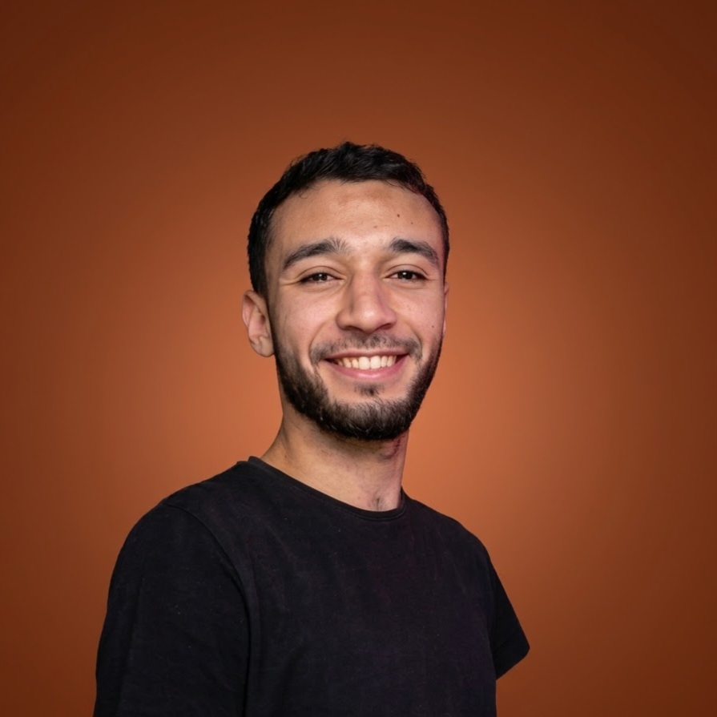

Mostafa Elmaghraby — AI Video DirectorI give you the creative direction and camera craft of a full production studio — without the studio's timeline or price tag.
Concept work
Yes. There's no legal restriction on using AI-generated footage in a commercial campaign, the same way there isn't for CGI or stock footage. Rights and usage terms depend on the specific tools involved, and every project I deliver comes with clear terms on what you can do with the final file.
Mostly cost and speed: a full crew, location, and equipment add up before a single frame is shot. AI production keeps the creative direction and camera craft while removing that overhead — so the budget saved can go toward media spend instead.
Judge it directly rather than taking a claim on faith — the concept work above is built the same way I'd build your campaign, so you can see the actual output before we talk.
Look past the pitch and at the work itself: full concepts rather than polished highlight reels, and whether the person can explain the creative decisions behind a shot, not just which tools they used.
Send a brief and I'll get back to you with a concept direction and a straight cost estimate.